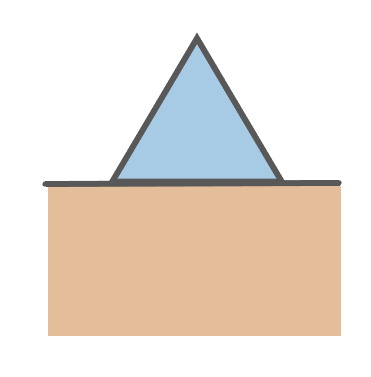
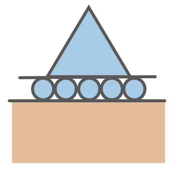

In order to find the reaction forces, we will now apply all that we have learnt so far i.e. simultaneously solve the equations
Fx = 0 , Fy = 0 and Mz = 0
We may also have to use the concept of distributed forces if they appear in the problem.
TIP: Resolve all forces that appear into x and y components to make the problem easier
Remember:
Pins:  They can exert forces perpendicular as well as parallel to their surface
Rollers:  They can only exert force perpendicular to their surface
In the example shown, the force P has been resolved into components (shown in light yellow) and the pin and roller reactions have also been shown.
On applying the equations for the given diagram, we get:
Now, let's solve a problem by applying what we have learnt here: